DANL 2.17
R Markdown
This is an R Markdown document. Markdown is a simple formatting syntax for authoring HTML, PDF, and MS Word documents. For more details on using R Markdown see http://rmarkdown.rstudio.com.
When you click the Knit button a document will be generated that includes both content as well as the output of any embedded R code chunks within the document. You can embed an R code chunk like this:
summary(cars)## speed dist
## Min. : 4.0 Min. : 2.00
## 1st Qu.:12.0 1st Qu.: 26.00
## Median :15.0 Median : 36.00
## Mean :15.4 Mean : 42.98
## 3rd Qu.:19.0 3rd Qu.: 56.00
## Max. :25.0 Max. :120.00Including Plots
You can also embed plots, for example:

Note that the echo = FALSE parameter was added to the code chunk to prevent printing of the R code that generated the plot.
library(tidyverse)## Warning: package 'tidyverse' was built under R version 4.0.5## -- Attaching packages --------------------------------------- tidyverse 1.3.1 --## v ggplot2 3.3.5 v purrr 0.3.4
## v tibble 3.1.4 v dplyr 1.0.7
## v tidyr 1.1.3 v stringr 1.4.0
## v readr 2.0.1 v forcats 0.5.1## Warning: package 'ggplot2' was built under R version 4.0.5## Warning: package 'tibble' was built under R version 4.0.5## Warning: package 'tidyr' was built under R version 4.0.5## Warning: package 'readr' was built under R version 4.0.5## Warning: package 'purrr' was built under R version 4.0.3## Warning: package 'dplyr' was built under R version 4.0.5## Warning: package 'stringr' was built under R version 4.0.3## Warning: package 'forcats' was built under R version 4.0.3## -- Conflicts ------------------------------------------ tidyverse_conflicts() --
## x dplyr::filter() masks stats::filter()
## x dplyr::lag() masks stats::lag()library(skimr) # a better summary of data frame## Warning: package 'skimr' was built under R version 4.0.5library(scales) # scales for ggplot## Warning: package 'scales' was built under R version 4.0.5##
## Attaching package: 'scales'## The following object is masked from 'package:purrr':
##
## discard## The following object is masked from 'package:readr':
##
## col_factorlibrary(gapminder) # gapminder data## Warning: package 'gapminder' was built under R version 4.0.3library(socviz) # data for visualization practice## Warning: package 'socviz' was built under R version 4.0.5library(ggrepel)## Warning: package 'ggrepel' was built under R version 4.0.5p <- ggplot(data = gss_sm,
mapping = aes(x = bigregion, fill = religion))
p+geom_bar(position = "fill")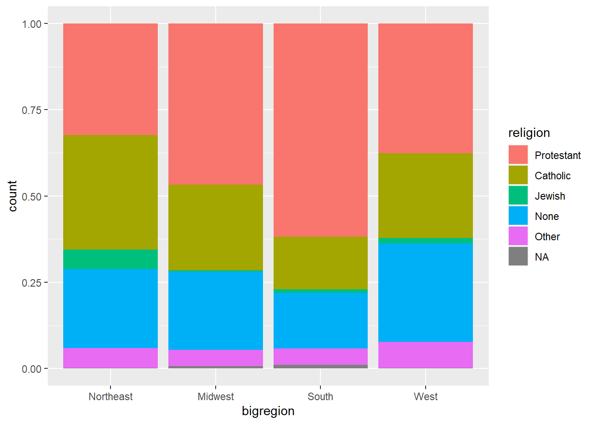
p <- ggplot(data = gss_sm,
mapping = aes(x = bigregion))
p + geom_bar(position = "dodge",
mapping = aes(y = ..prop.., group = religion)) +
facet_wrap(~ religion, ncol =1)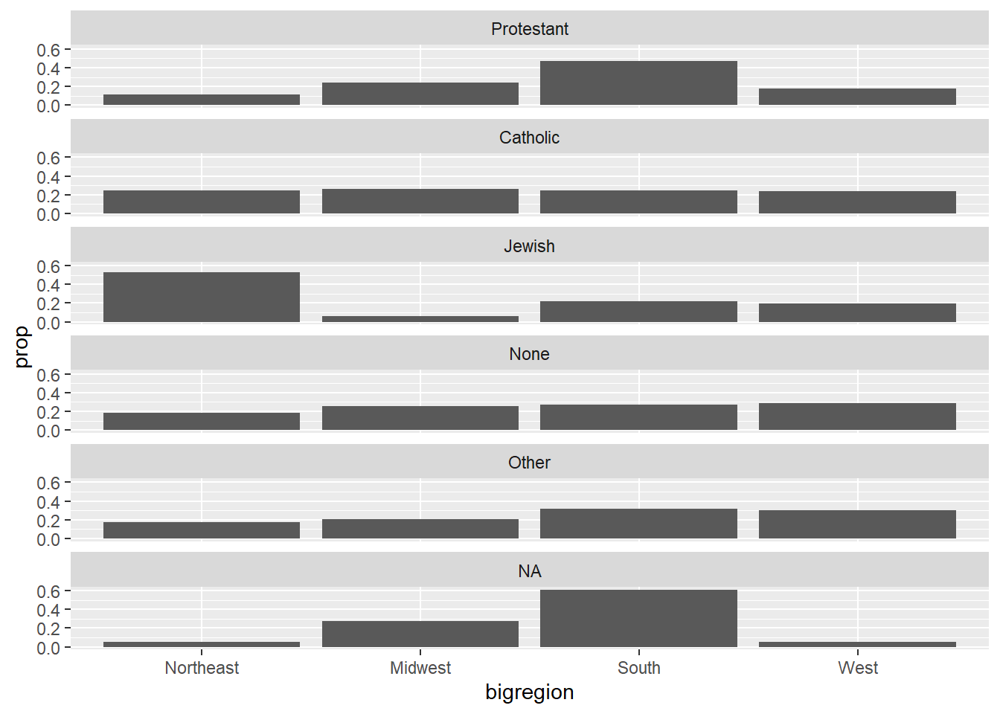
rel_by_region <- gss_sm %>%
group_by(bigregion, religion) %>%
summarize( N = n()) %>%
mutate( freq = N / sum(N),
pct = round((freq*100), 0) )## `summarise()` has grouped output by 'bigregion'. You can override using the `.groups` argument.rel_by_region## # A tibble: 24 x 5
## # Groups: bigregion [4]
## bigregion religion N freq pct
## <fct> <fct> <int> <dbl> <dbl>
## 1 Northeast Protestant 158 0.324 32
## 2 Northeast Catholic 162 0.332 33
## 3 Northeast Jewish 27 0.0553 6
## 4 Northeast None 112 0.230 23
## 5 Northeast Other 28 0.0574 6
## 6 Northeast <NA> 1 0.00205 0
## 7 Midwest Protestant 325 0.468 47
## 8 Midwest Catholic 172 0.247 25
## 9 Midwest Jewish 3 0.00432 0
## 10 Midwest None 157 0.226 23
## # ... with 14 more rowsp <- ggplot(rel_by_region, aes(x = bigregion, y = pct, fill = religion))
p + geom_col(position = "dodge2") +
labs(x = "region", y = "percent", fill = "Religion")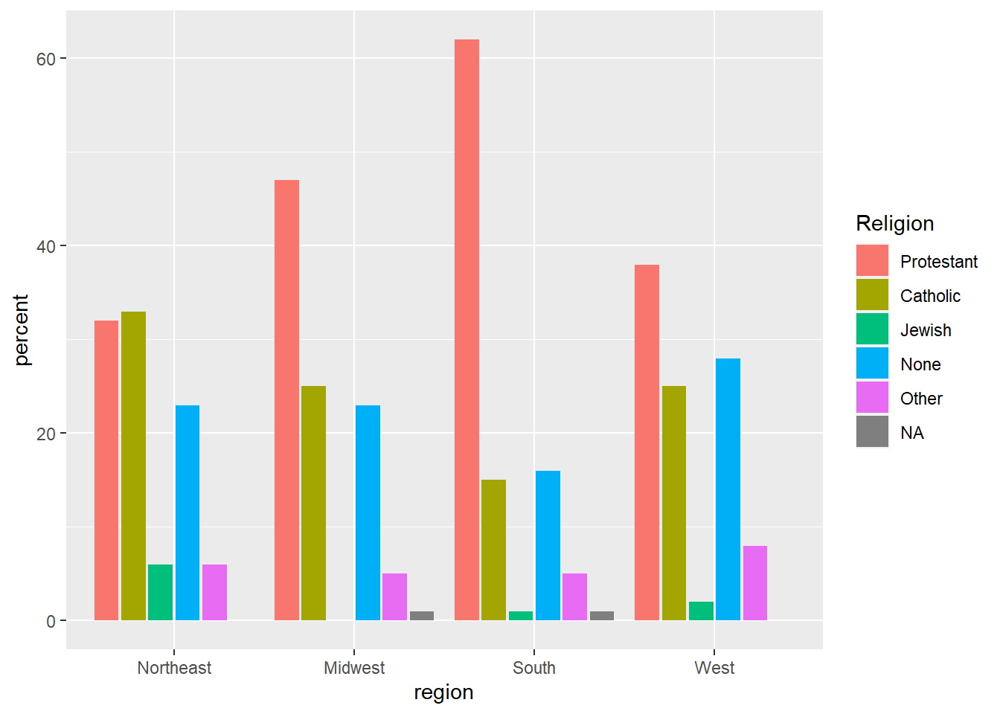
glimpse(organdata)## Rows: 238
## Columns: 21
## $ country <chr> "Australia", "Australia", "Australia", "Australia", "~
## $ year <date> NA, 1991-01-01, 1992-01-01, 1993-01-01, 1994-01-01, ~
## $ donors <dbl> NA, 12.09, 12.35, 12.51, 10.25, 10.18, 10.59, 10.26, ~
## $ pop <int> 17065, 17284, 17495, 17667, 17855, 18072, 18311, 1851~
## $ pop_dens <dbl> 0.2204433, 0.2232723, 0.2259980, 0.2282198, 0.2306484~
## $ gdp <int> 16774, 17171, 17914, 18883, 19849, 21079, 21923, 2296~
## $ gdp_lag <int> 16591, 16774, 17171, 17914, 18883, 19849, 21079, 2192~
## $ health <dbl> 1300, 1379, 1455, 1540, 1626, 1737, 1846, 1948, 2077,~
## $ health_lag <dbl> 1224, 1300, 1379, 1455, 1540, 1626, 1737, 1846, 1948,~
## $ pubhealth <dbl> 4.8, 5.4, 5.4, 5.4, 5.4, 5.5, 5.6, 5.7, 5.9, 6.1, 6.2~
## $ roads <dbl> 136.59537, 122.25179, 112.83224, 110.54508, 107.98096~
## $ cerebvas <int> 682, 647, 630, 611, 631, 592, 576, 525, 516, 493, 474~
## $ assault <int> 21, 19, 17, 18, 17, 16, 17, 17, 16, 15, 16, 15, 14, N~
## $ external <int> 444, 425, 406, 376, 387, 371, 395, 385, 410, 409, 393~
## $ txp_pop <dbl> 0.9375916, 0.9257116, 0.9145470, 0.9056433, 0.8961075~
## $ world <chr> "Liberal", "Liberal", "Liberal", "Liberal", "Liberal"~
## $ opt <chr> "In", "In", "In", "In", "In", "In", "In", "In", "In",~
## $ consent_law <chr> "Informed", "Informed", "Informed", "Informed", "Info~
## $ consent_practice <chr> "Informed", "Informed", "Informed", "Informed", "Info~
## $ consistent <chr> "Yes", "Yes", "Yes", "Yes", "Yes", "Yes", "Yes", "Yes~
## $ ccode <chr> "Oz", "Oz", "Oz", "Oz", "Oz", "Oz", "Oz", "Oz", "Oz",~p <- ggplot(data = organdata,
mapping = aes(x = year, y = donors))
p + geom_point()## Warning: Removed 34 rows containing missing values (geom_point).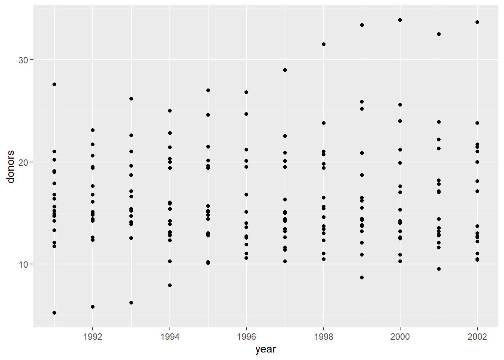
p <- ggplot(data = organdata,
mapping = aes(x = year, y = donors))
p + geom_line(aes(group = country)) + facet_wrap( ~country) +
theme(axis.text.x = element_text(angle = 45))## Warning: Removed 34 row(s) containing missing values (geom_path).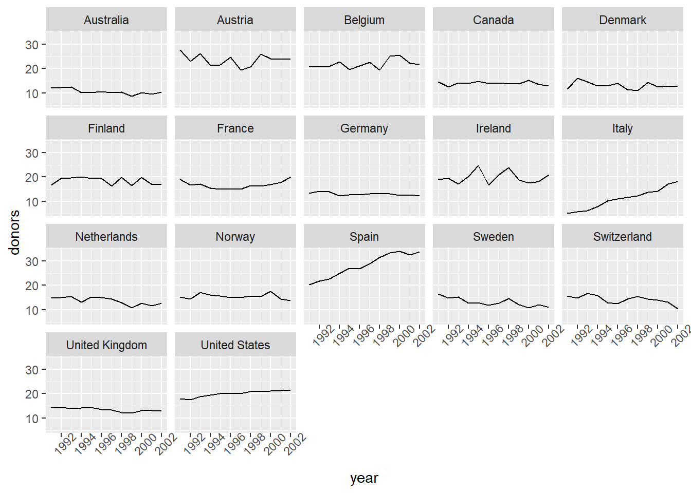
p <- ggplot(data = organdata,
mapping = aes(x = country, y = donors))
p + geom_boxplot() + coord_flip()## Warning: Removed 34 rows containing non-finite values (stat_boxplot).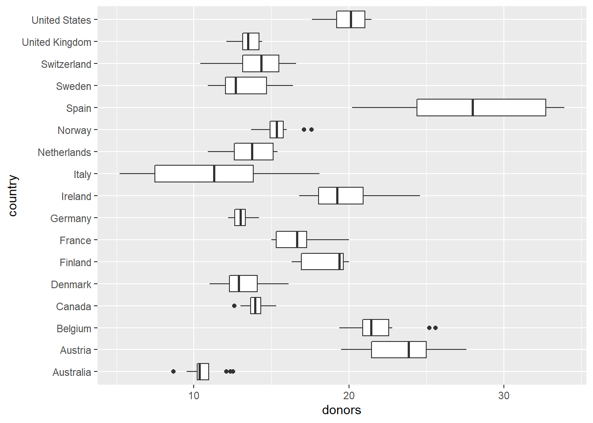
p <- ggplot(data = organdata,
mapping = aes(x = reorder(country, donors, na.rm = TRUE), y = donors))
p + geom_boxplot()+
labs(x = NULL) +
coord_flip()## Warning: Removed 34 rows containing non-finite values (stat_boxplot).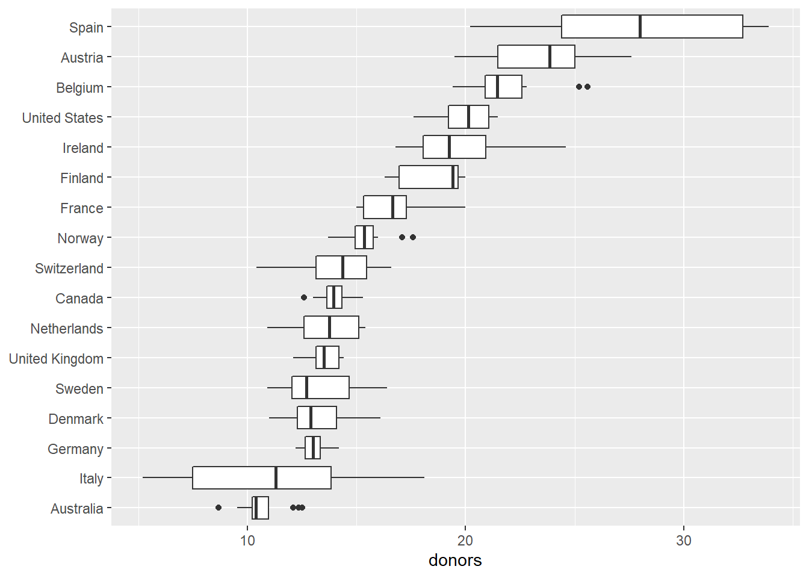
p <- ggplot(data = organdata,
mapping = aes(x = reorder(country, donors, na.rm = TRUE), y = donors, fill = world))
p + geom_boxplot() + labs(x = NULL) +
coord_flip()## Warning: Removed 34 rows containing non-finite values (stat_boxplot).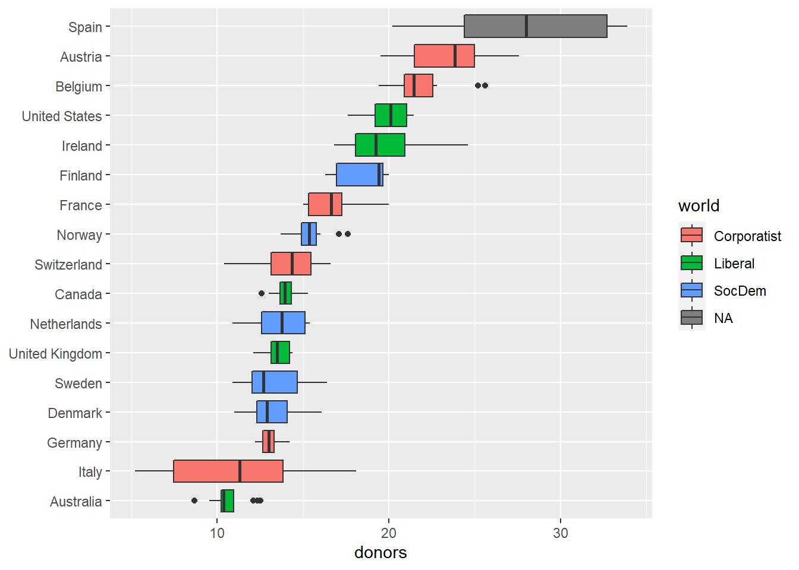
by_country <- organdata %>% group_by(consent_law, country) %>%
summarize(donors_mean= mean(donors, na.rm = TRUE),
donors_sd = sd(donors, na.rm = TRUE),
gdp_mean = mean(gdp, na.rm = TRUE),
health_mean = mean(health, na.rm = TRUE),
roads_mean = mean(roads, na.rm = TRUE),
cerebvas_mean = mean(cerebvas, na.rm = TRUE))## `summarise()` has grouped output by 'consent_law'. You can override using the `.groups` argument.by_country## # A tibble: 17 x 8
## # Groups: consent_law [2]
## consent_law country donors_mean donors_sd gdp_mean health_mean roads_mean
## <chr> <chr> <dbl> <dbl> <dbl> <dbl> <dbl>
## 1 Informed Australia 10.6 1.14 22179. 1958. 105.
## 2 Informed Canada 14.0 0.751 23711. 2272. 109.
## 3 Informed Denmark 13.1 1.47 23722. 2054. 102.
## 4 Informed Germany 13.0 0.611 22163. 2349. 113.
## 5 Informed Ireland 19.8 2.48 20824. 1480. 118.
## 6 Informed Netherlands 13.7 1.55 23013. 1993. 76.1
## 7 Informed United Kingdom 13.5 0.775 21359. 1561. 67.9
## 8 Informed United States 20.0 1.33 29212. 3988. 155.
## 9 Presumed Austria 23.5 2.42 23876. 1875. 150.
## 10 Presumed Belgium 21.9 1.94 22500. 1958. 155.
## 11 Presumed Finland 18.4 1.53 21019. 1615. 93.6
## 12 Presumed France 16.8 1.60 22603. 2160. 156.
## 13 Presumed Italy 11.1 4.28 21554. 1757 122.
## 14 Presumed Norway 15.4 1.11 26448. 2217. 70.0
## 15 Presumed Spain 28.1 4.96 16933 1289. 161.
## 16 Presumed Sweden 13.1 1.75 22415. 1951. 72.3
## 17 Presumed Switzerland 14.2 1.71 27233 2776. 96.4
## # ... with 1 more variable: cerebvas_mean <dbl>by_country <- organdata %>% group_by(consent_law, country) %>%
summarize_if(is.numeric, funs(mean, sd), na.rm = TRUE) %>%
ungroup()## Warning: `funs()` was deprecated in dplyr 0.8.0.
## Please use a list of either functions or lambdas:
##
## # Simple named list:
## list(mean = mean, median = median)
##
## # Auto named with `tibble::lst()`:
## tibble::lst(mean, median)
##
## # Using lambdas
## list(~ mean(., trim = .2), ~ median(., na.rm = TRUE))
## This warning is displayed once every 8 hours.
## Call `lifecycle::last_warnings()` to see where this warning was generated.by_country## # A tibble: 17 x 28
## consent_law country donors_mean pop_mean pop_dens_mean gdp_mean gdp_lag_mean
## <chr> <chr> <dbl> <dbl> <dbl> <dbl> <dbl>
## 1 Informed Austral~ 10.6 18318. 0.237 22179. 21779.
## 2 Informed Canada 14.0 29608. 0.297 23711. 23353.
## 3 Informed Denmark 13.1 5257. 12.2 23722. 23275
## 4 Informed Germany 13.0 80255. 22.5 22163. 21938.
## 5 Informed Ireland 19.8 3674. 5.23 20824. 20154.
## 6 Informed Netherl~ 13.7 15548. 37.4 23013. 22554.
## 7 Informed United ~ 13.5 58187. 24.0 21359. 20962.
## 8 Informed United ~ 20.0 269330. 2.80 29212. 28699.
## 9 Presumed Austria 23.5 7927. 9.45 23876. 23415.
## 10 Presumed Belgium 21.9 10153. 30.7 22500. 22096.
## 11 Presumed Finland 18.4 5112. 1.51 21019. 20763
## 12 Presumed France 16.8 58056. 10.5 22603. 22211.
## 13 Presumed Italy 11.1 57360. 19.0 21554. 21195.
## 14 Presumed Norway 15.4 4386. 1.35 26448. 25769.
## 15 Presumed Spain 28.1 39666. 7.84 16933 16584.
## 16 Presumed Sweden 13.1 8789. 1.95 22415. 22094
## 17 Presumed Switzer~ 14.2 7037. 17.0 27233 26931.
## # ... with 21 more variables: health_mean <dbl>, health_lag_mean <dbl>,
## # pubhealth_mean <dbl>, roads_mean <dbl>, cerebvas_mean <dbl>,
## # assault_mean <dbl>, external_mean <dbl>, txp_pop_mean <dbl>,
## # donors_sd <dbl>, pop_sd <dbl>, pop_dens_sd <dbl>, gdp_sd <dbl>,
## # gdp_lag_sd <dbl>, health_sd <dbl>, health_lag_sd <dbl>, pubhealth_sd <dbl>,
## # roads_sd <dbl>, cerebvas_sd <dbl>, assault_sd <dbl>, external_sd <dbl>,
## # txp_pop_sd <dbl>p <- ggplot(data = by_country,
mapping = aes(x = donors_mean, y = reorder(country, donors_mean),
color = consent_law))
p + geom_point(size=3) +
labs(x = "Donor Procurement Rate",
y = "", color = "Consent Law") +
theme(legend.position="top")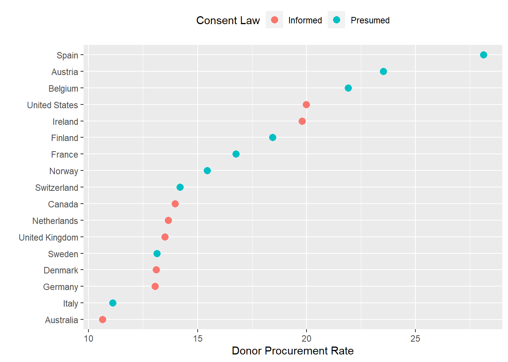
p <- ggplot(data = by_country,
mapping = aes(x = donors_mean,
y = reorder(country, donors_mean)))
p + geom_point(size=3) +
facet_wrap(~ consent_law, scales = "free_y", ncol = 1) +
labs(x= "Donor Procurement Rate",
y= "")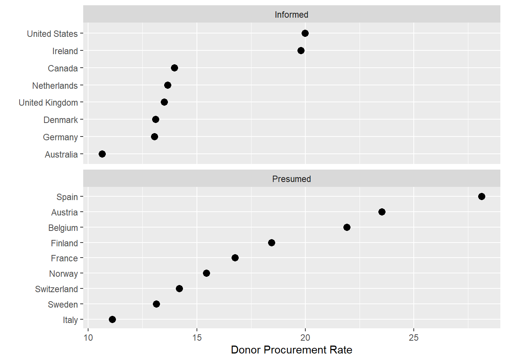
p_title <- "Presidential Elections: Popular & Electoral College Margins"
p_subtitle <- "1824-2016"
p_caption <- "Data for 2016 are provisional."
x_label <- "Winner's share of Popular Vote"
y_label <- "Winner's share of Electoral College Votes"
p <- ggplot(elections_historic, aes(x = popular_pct, y = ec_pct,
label = winner_label))
p + geom_hline(yintercept = 0.5, size = 1.4, color = "gray80") + # We use two new geoms, `geom_hline()` and `geom_vline()` to make the lines.
geom_vline(xintercept = 0.5, size = 1.4, color = "gray80") +
geom_point() +
geom_text_repel() + # `geom_text_repel()` makes sure the labels do not overlap with each other, or obscure other points.
scale_x_continuous(labels = scales::percent) +
scale_y_continuous(labels = scales::percent) +
labs(x = x_label, y = y_label, title = p_title, subtitle = p_subtitle,
caption = p_caption)## Warning: ggrepel: 15 unlabeled data points (too many overlaps). Consider
## increasing max.overlaps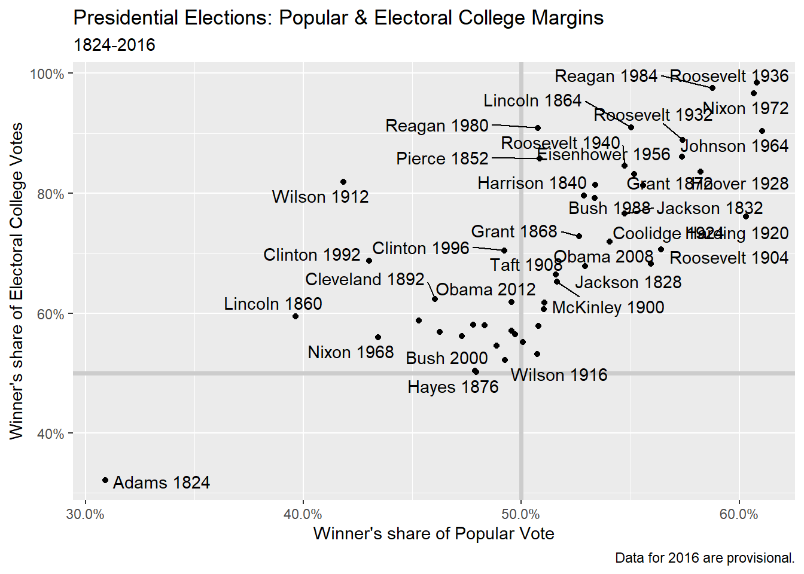